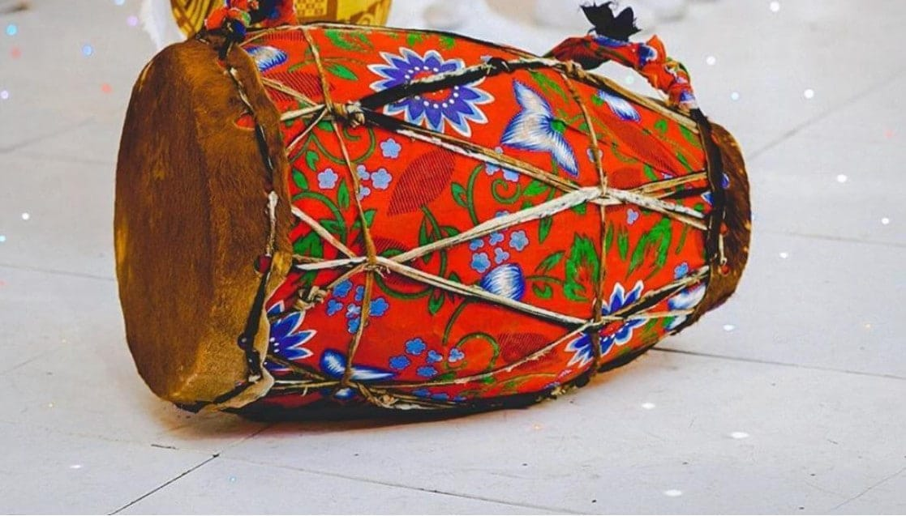
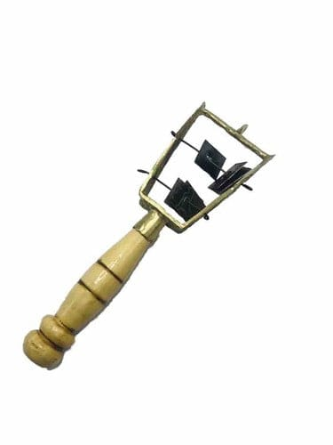
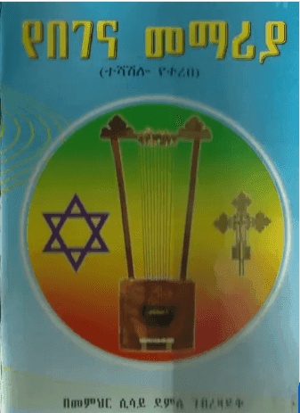

በገና፡ የመንፈሳዊነትና የዝምታ ድምፅ Begena: The Sound of Spirituality and Silence
በገና በዓለም ላይ ካሉ ጥንታዊ የሙዚቃ መሣሪያዎች አንዱ ሲሆን፣ በኢትዮጵያ ኦርቶዶክስ ተዋሕዶ ቤተክርስቲያን መንፈሳዊ አገልግሎት ውስጥ ትልቅ ቦታ አለው። "የዳዊት በገና" በመባልም ይታወቃል። The Begena is one of the world's oldest musical instruments, holding a significant place in the spiritual service of the Ethiopian Orthodox Tewahedo Church. It is also known as "David's Harp."
ታሪካዊ አመጣጥ Historical Origins
በኢትዮጵያ ታሪክና ትውፊት መሠረት፣ በገና ለመጀመሪያ ጊዜ ወደ ኢትዮጵያ የገባው በቀዳማዊ ምኒልክ አማካኝነት ከእስራኤል እንደሆነ ይታመናል። ይህ መሣሪያ ንጉሥ ዳዊት እግዚአብሔርን ለማመስገንና የንጉሥ ሳኦልን መንፈስ ለማረጋጋት ይጠቀምበት የነበረው መሣሪያ እንደሆነ ይነገራል። According to Ethiopian history and tradition, the Begena was first brought to Ethiopia from Israel by Menelik I. It is said to be the instrument used by King David to praise God and soothe the spirit of King Saul.
በገና "የመላእክት መሣሪያ" ተብሎ ይጠራል። ድምፁ ረጋ ያለና ወደ ውስጥ የሚመስጥ በመሆኑ፣ ሰውን ከፈጣሪው ጋር የሚያገናኝ ድልድይ ተደርጎ ይወሰዳል። The Begena is called the "Instrument of Angels." Its sound is calm and meditative, serving as a bridge connecting humanity with the Creator.
የበገና ቅርጽና አሠራር Form and Construction
በገና አራት ማዕዘን ቅርጽ ያለው ትልቅ መሣሪያ ነው። ከአሥሩ አውታሮች መካከል የሚመቱት አምስቱ ወይም ስድስቱ ብቻ ናቸው። የበገና ልዩ መለያ የሚሰጠው "ውሻሻ (Ushasha)" በመባል የሚታወቀው የንዝረት ድምፅ ነው። The Begena is a large, rectangular instrument. Out of its ten strings, only five or six are plucked. Its unique character comes from the vibrating sound known as "Ushasha."
በገና ለዓለማዊ ጭፈራ በፍጹም አይውልም። በተለይ በዓቢይ ጾም ወቅት ለጸጸትና ለማሰላሰል (Meditation) ያገለግላል። ከበገና ጋር የሚቀርቡ ቅኔዎች "ሰምና ወርቅ" የተባለውን ጥልቅ ጥበብ የተከተሉ ናቸው። The Begena is never used for secular dancing. It is primarily used during Great Lent for penance and meditation. The poetry accompanied by the Begena follows the profound "Wax and Gold" (Sem-enna-Werq) tradition.

ክራር በመንፈሳዊ አገልግሎት The Kirar in Spiritual Service
ክራር በመዝሙርና በምስጋና ጊዜ ጥቅም ላይ የሚውል ሲሆን፣ የራሱ የሆነ ጥልቅ ተምሳሌትና ታሪክ አለው። በመዝሙር 150 ላይ "በመሰንቆና በገና አመስግኑት" ተብሎ እንደተጻፈው፣ ለምስጋና ዝማሬዎች ዋነኛ መሣሪያ ነው። The Kirar is used for psalms and praise, possessing deep symbolism and history. As written in Psalm 150, "Praise Him with the harp and lyre," it is a primary instrument for hymns.
ተምሳሌታዊ ትርጉሙ Symbolic Meaning
የክርስትና እምነት መሠረት የሆኑት አምስቱ ምሰሶዎች። Representing the five fundamental pillars of the Christian faith.
ጌታችን ኢየሱስ ክርስቶስ በመስቀል ላይ የተቀበላቸው አምስቱ ቁስሎች። Symbolizing the five wounds received by Jesus Christ on the cross.
የክራር አሠራርና ክፍሎች Construction and Parts
ድምፁ ጎልቶ እንዲወጣ የሚያደርግ በቆዳ የተሸፈነ የእንጨት ክፍል (Resonator) እና አውታሮቹን የሚሸከሙ ጠንካራ ምሰሶዎች አውታሮች። A leather-covered wooden resonator that amplifies the sound, and sturdy pillars that hold the strings.
አውታሮቹ ከሳጥኑ ጋር ተነክተው የሚርገበገቡበትና ድምፁን የሚያስተካክለው ወሳኝ ክፍል ነው። The essential part where the strings vibrate against the body to produce the correct tone.

መሰንቆ በኢትዮጵያ ታሪክና ትውፊት The Masinko in Ethiopian Tradition
መሰንቆ ከአዝማሪዎች ጋር የሚገናኝና ለሕዝባዊ ግጥሞችና ዜማዎች የታወቀ ቢሆንም፣ በታሪክና በሃይማኖታዊ ተምሳሌትነትም ትልቅ ቦታ አለው። በተለይም ከዕዝራ (Ezra) ታሪክ ጋር ተያይዞ "መሰንቆ ለዕዝራ - በገና ለዳዊት" ተብሎ ይጠቀሳል። Although the Masinko is often associated with Azmaris and folk songs, it holds a significant place in history and religious symbolism. It is famously noted: "The Masinko for Ezra - the Begena for David."
ታሪካዊ አመጣጥና ተምሳሌት History and Symbolism
በኢትዮጵያ ኦርቶዶክስ ተዋሕዶ ቤተክርስቲያን ትውፊት መሠረት፣ በገና ለቅዱስ ዳዊት እንደተሰጠው ሁሉ መሰንቆ ደግሞ ለዕዝራ እንደተሰጠ ይታመናል። ይህም መሣሪያው ጥንታዊና መንፈሳዊ መሠረት እንዳለው ያረጋግጣል። In the tradition of the Ethiopian Orthodox Tewahedo Church, it is believed that just as the Begena was given to St. David, the Masinko was given to Ezra.
መሰንቆ አንድ አውታር (String) ብቻ ያለው መሆኑ የአንድነትና የ"አንድ እምነት" (One Faith) ተምሳሌት ተደርጎ ይወሰዳል። The fact that the Masinko has only one string makes it a symbol of unity and "One Faith."
የመሰንቆ አሠራርና ክፍልፋዮች Construction and Details
የመሰንቆው አናት (Pegbox) መስቀል ቅርጽ ያለው ሲሆን፣ ይህም ክርስትና በመሣሪያው ጥበብ ውስጥ ያለውን ቦታ ያሳያል። The top of the Masinko (pegbox) is shaped like a cross, reflecting the place of Christianity in the artistry of the instrument.
መሰንቆ በሕዝባዊ ሕይወት ውስጥ የዜና ማስተላለፊያ፣ የማህበራዊ ትችትና የታሪክ ትረካ መሣሪያ ሆኖ ሲያገለግል ቆይቷል። የአዝማሪዎች ብቃት በዚሁ መሣሪያና በሚቀኙት ቅኔ ይለካል። In social life, the Masinko has served as a tool for news, social critique, and storytelling. The skill of an Azmari is measured by their mastery of this instrument.
ኤሌክትሪክ ክራር፡ የቅርሱ ዘመናዊ ድልድይ Electric Kirar: A Modern Bridge to Heritage
የጥንቱን የክራር ድምፅ ከዘመናዊው የቴክኖሎጂ አሠራር ጋር በማዋሃድ፣ ለዛሬው ትውልድና መድረክ የሚመጥን ድምፅ የሚፈጥር መሣሪያ ነው። ይህ መሣሪያ በባሕላዊ ዜማዎች ውስጥ አዳዲስ የቀለም ቅላጼዎችን ለመጨመር ይረዳል። By blending the ancient sound of the Kirar with modern technology, this instrument creates a sound suitable for today's generation and stage, adding new colors to traditional melodies.
ዘመናዊነትና ቅርስ Modernity and Heritage
ባሕላዊ አሠራሩ ሳይቀየር፣ የኤሌክትሪክ ማንሻዎች (Pickups) ተጨምረውለት በትልቅ የሙዚቃ ኮንሰርቶችና መድረኮች ላይ ጎልቶ እንዲሰማ ተደርጎ የተሠራ ነው። While maintaining traditional construction, electric pickups are added to allow the instrument to be heard clearly in large concerts and venues.
ኤሌክትሪክ ክራር ለባሕላዊ ዜማዎች ብቻ ሳይሆን፣ ለጃዝ (Jazz) እና ለሮክ (Rock) ሙዚቃዎችም ጭምር ተስማሚ ሆኖ ተዘጋጅቷል። The Electric Kirar is designed not only for traditional songs but also for Jazz and Rock music.
ጥራትና ጥንካሬ Quality and Durability
መሣሪያው እንዳይሰነጣጠቅና ዘላቂ እንዲሆን ከደረቁና ለኤሌክትሪክ መሣሪያ በሚመጥኑ የእንጨት ዝርያዎች ይሠራል። The instrument is crafted from seasoned wood suitable for electric instruments to ensure it remains durable and crack-free.
በዓለም አቀፍ ደረጃ የሚታወቁት የኢትዮጵያ ሙዚቀኞች ይህንን መሣሪያ በመጠቀም የኢትዮጵያን ድምፅ ለዓለም አስተዋውቀዋል። Internationally renowned Ethiopian musicians use this instrument to introduce the unique Ethiopian sound to the world.

ከበሮ፡ የአንድነትና የመለኮት ተምሳሌት Kebero: Symbol of Unity and Divinity
ከበሮ በኢትዮጵያ ኦርቶዶክስ ተዋሕዶ ቤተክርስቲያን መንፈሳዊ አገልግሎት ውስጥ ወሳኝ መሣሪያ ነው። ድምፁ የምስጋናና የዝማሬ ማጀቢያ ብቻ ሳይሆን፣ ጥልቅ ምስጢራዊ ትርጉምም አለው። The Kebero is a vital drum in the Ethiopian Orthodox Tewahedo Church spiritual service. Its sound is not just an accompaniment but holds deep mystical meaning.
መንፈሳዊ ተምሳሌት Spiritual Symbolism
የከበሮው ሁለት ገጾች የጌታችንን መለኮትና ትስብእት (Divinity and Humanity) ይወክላሉ። ትልቁ ገጽ መለኮትን፣ ትንሹ ገጽ ደግሞ ትስብእትን (ሰው መሆኑን) ያመለክታሉ። The two sides of the Kebero represent the Divinity and Humanity of Christ. The larger side signifies Divinity, while the smaller side signifies Humanity.
የቅርስ አሠራር Traditional Craft
እንዲሁም ሁለቱ ገጾች የብሉይና የሐዲስ ኪዳን አንድነትንና ስምምነትን ይገልጻሉ። በቆዳው ላይ ያሉት ሽንሸናዎች (Weaving) ክርስቶስ የተቀበለውን ገረፋ ያስታውሳሉ። The two sides also express the harmony between the Old and New Testaments. The weaving on the leather recalls the stripes Christ received.
ዋሽንት፡ የወንጌላውያን ድምፅ Washint: The Voice of the Evangelists
ዋሽንት ከቀርከሃ የሚሠራና አምስት ወይም አራት ቀዳዳዎች ያሉት ጥንታዊ የኢትዮጵያ የንፋስ መሣሪያ ነው። ይህ መሣሪያ በዋናነት በጎልማሶችና በእረኞች ዘንድ ቢታወቅም፣ በቤተክርስቲያን ታሪክ ውስጥም ቦታ አለው። The Washint is an ancient Ethiopian flute made from bamboo with four or five holes. Primarily known among adults and shepherds, it also holds a place in church history.
ተምሳሌታዊ ትርጉም Symbolic Meaning
የዋሽንት አራት ቀዳዳዎች አራቱን ወንጌላውያን (ማቴዎስ፣ ማርቆስ፣ ሉቃስና ዮሐንስ) ይወክላሉ። የቀዳዳዎቹ አንድነት ደግሞ የወንጌልን አንድነት ያሳያል። The four holes represent the four Evangelists (Matthew, Mark, Luke, and John), while their unity signifies the unity of the Gospel.
ሃይማኖታዊ ፋይዳ Religious Value
አምስት ቀዳዳዎች ካሉት ደግሞ የክርስትና እምነት መሠረት የሆኑትን አምስቱን አዕማደ ሃይማኖት ተምሳሌት አድርገው ይወሰዳሉ። With five holes, it symbolizes the five pillars of the Christian faith.

ጸናጽል፡ የቅዱስ ያሬድ ምስጋና Sanasel: St. Yared's Instrument of Praise
ጸናጽል በኢትዮጵያ ኦርቶዶክስ ተዋሕዶ ቤተክርስቲያን ውስጥ ለዝማሬ አገልግሎት የሚውል መሣሪያ ነው። ይህ መሣሪያ በተለይ ከቅዱስ ያሬድ ዜማ ጋር ጥብቅ ቁርኝት አለው። The Sanasel (Sistrum) is an instrument used for liturgical chants in the Ethiopian Orthodox Tewahedo Church, closely linked with the hymns of St. Yared.
ተምሳሌት Symbolism
የጸናጽሉ ድምፅ መላእክት እግዚአብሔርን የሚያመሰግኑበትን ድምፅ ተምሳሌት እንደሆነ ይነገራል። ይህም ለምስጋናና ለታላላቅ በዓላት ልዩ ውበት ይሰጣል። The sound of the Sanasel is said to symbolize the praise of angels, adding special beauty to hymns and festivals.
አወቃቀሩ Structure
በጸናጽሉ ላይ ያሉት ሦስት ዘንጎች የሥላሴን ሦስትነትና አንድነት (Trinity) እንደሚያመለክቱ ይታመናል። The three bars on the Sanasel are believed to represent the Unity and Trinity of the Holy Trinity.
መለከት፡ የንግሥናና የክብር ድምፅ Meleket: The Sound of Royalty and Honor
መለከት ከቀርከሃና ከቆዳ የሚሠራ ረጅም መሣሪያ ሲሆን፣ በታሪክ ከፍተኛ የክብርና የንግሥና ድምፅ ተደርጎ ይወሰዳል። The Meleket is a long trumpet made of bamboo and leather, traditionally regarded as a sound of great honor and royalty.
ታሪካዊ ፋይዳ Historical Role
ታላላቅ የንግሥና አዋጆች፣ ጦርነቶችና ሃይማኖታዊ በዓላት ሲኖሩ ለሕዝቡ መልእክት ለማድረስ መለከት ይነፋ ነበር። The Meleket was blown to announce royal decrees, wars, and religious festivals to the public.
የቅዱስ ያሬድ ዜማ St. Yared's Melodies
በቅዱስ ያሬድ የዜማ ምልክቶች (Melekets) ውስጥ መለከት የራሱ የሆነ የዜማ ስልትና መለያ ምልክት አለው። Within St. Yared's musical notations (also called Melekets), this instrument has its own distinct melodic style and symbol.

Artisan Tuning Pegs
የክራርና የበገና አውታሮችን ለማጥበቅና ድምፃቸውን ለማስተካከል የሚያገለግሉ በጥንካሬያቸው የታወቁ የእንጨት ውጤቶች ናቸው። Hand-carved wooden pegs used to tighten strings and tune the Kirar and Begena.
ጥራት Quality
ከጥቁር እንጨትና ከዋንዛ የሚሠሩ በመሆናቸው ለረጅም ጊዜ አገልግሎት ይሰጣሉ። Crafted from Ebony and Cordia Africana for long-lasting durability.
አወቃቀር Design
አውታሩ እንዳይላላና ድምፅ እንዳይቀይር በጥብቅ እንዲይዙ ተደርገው ይታረባሉ። Specially shaped to hold the strings securely without slipping.

Sheep-Gut Strings
ከበግ አንጀት የሚሠሩና ለየት ያለና የሚማርክ ድምፅ ያላቸው ተፈጥሯዊ አውታሮች ናቸው። Natural strings made from sheep gut, providing a unique and captivating sound.
ድምፅ Sound
ተፈጥሯዊው አውታር ከናይለንና ከብረት አውታሮች ይልቅ ወደ ውስጥ የሚመስጥና ጥልቅ የሆነ ድምፅ አለው። Unlike nylon or metal strings, these provide a deep, resonant, and traditional tone.
ዝግጅት Preparation
አንጀቱ በባሕላዊ መንገድ ተለፍቶና ተከርክሞ ለሙዚቃ ዝግጁ እንዲሆን ይደረጋል። The gut is traditionally cured and treated specifically for musical use.

Conditioning Wax
መሣሪያዎቹ እንዳይሰነጣጠቁና ለረጅም ጊዜ እንዲያገለግሉ የሚቀቡ ባሕላዊ ዘይቶችና ቅባቶች ናቸው። Traditional oils and waxes used to protect the instruments from cracking and ensure longevity.
ጥበቃ Protection
እንጨቱ በአየሩ ሁኔታ ምክንያት እንዳይሰነጣጥቅና ቆዳው እንዳይደርቅ ይከላከላል። Prevents wood from splitting due to weather changes and keeps the leather supple.
ግብዓት Ingredients
ከተፈጥሮ ንብ ሰምና ከሊንሲድ ዘይት የተዘጋጀ ነው። Crafted from natural beeswax and linseed oil.

የበገና መማሪያ መጽሐፍ The Begena Lesson Book
ይህ መጽሐፍ የበገናን ጥበብ ከመሠረቱ ለሚማሩ ተማሪዎች የተዘጋጀ አጠቃላይ መመሪያ ነው። የታሪክ ዳራውን፣ የአውታር አሠራርንና መሠረታዊ የዜማ ስልቶችን በዝርዝር ይዟል። This comprehensive guide is designed for students learning the art of the Begena from the ground up. It covers historical background, stringing techniques, and basic melodic patterns.
ምን ይዟል? What's Inside?
በጣም የታወቁ የበገና መዝሙሮች በምልክት (Notation) ተዘጋጅተው ቀርበዋል። Notation for the most well-known Begena hymns is included for easy learning.
ጥቅሙ Benefits
መጽሐፉ መምህር በሌለበት ሁኔታ ተማሪዎች በራሳቸው እንዲለማመዱ ተደርጎ የተዘጋጀ ነው። The book is structured to allow students to practice independently even without a teacher.